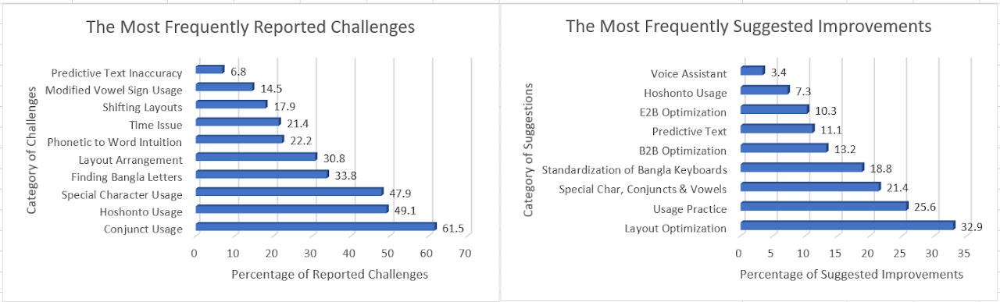
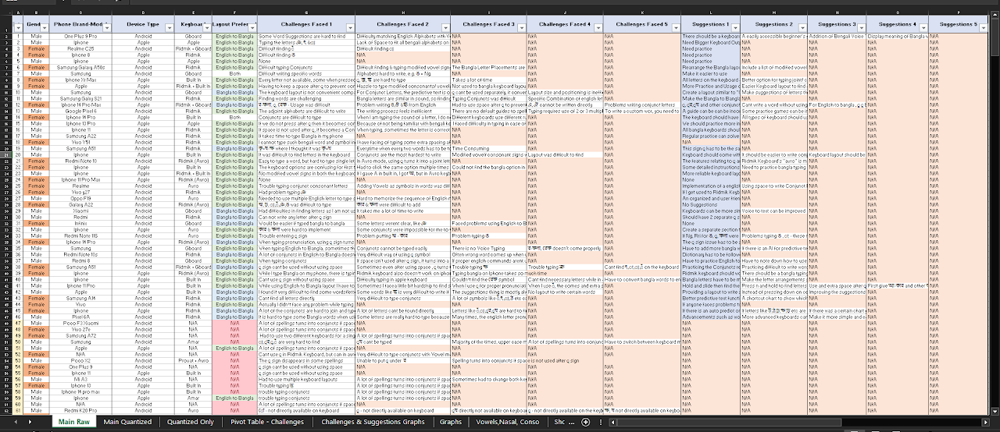
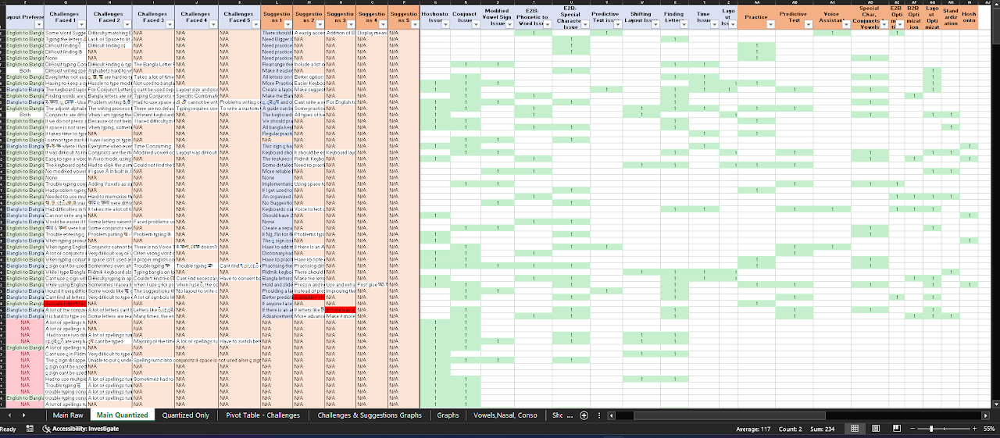

Back to Research
Bangla Texting on Smartphones
This research explores the challenges faced by users of Bangla keyboards on smartphones. Through qualitative data collection and analysis, we identified key pain points and user suggestions for improvement.
The qualitative data was salvaged point to point, then categorized to derive quantitative insights. Pivot tables and graphs were generated to extract relevant key findings about user challenges and suggested improvements.
Key Topics: Human-Computer Interaction, Bangla Language Input, Mobile Keyboards, User Experience Research
Research Findings

Most Frequently Reported Challenges and Suggested Improvements
Data Collection & Analysis

Raw Survey Data Collection

Quantized Data for Analysis